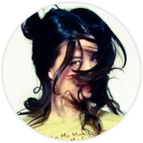

Solo jazz & classical piano for lounges, restaurants, hotels & conferences.
19 years piano experience
- Certifications
-
Performers ARCT Diploma
Royal Conservatory of Music | 2005
-
Licentiate Diploma
London College of Music | 2005
-
Keyboardist for Said The Whale
Personal | (2008 - Present)
-